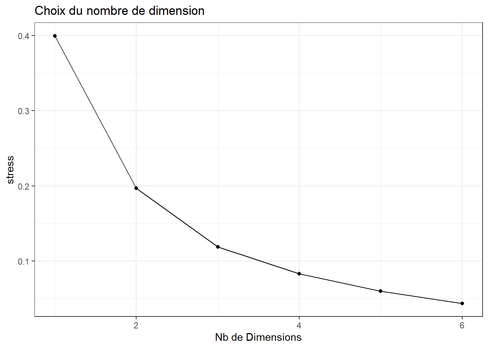
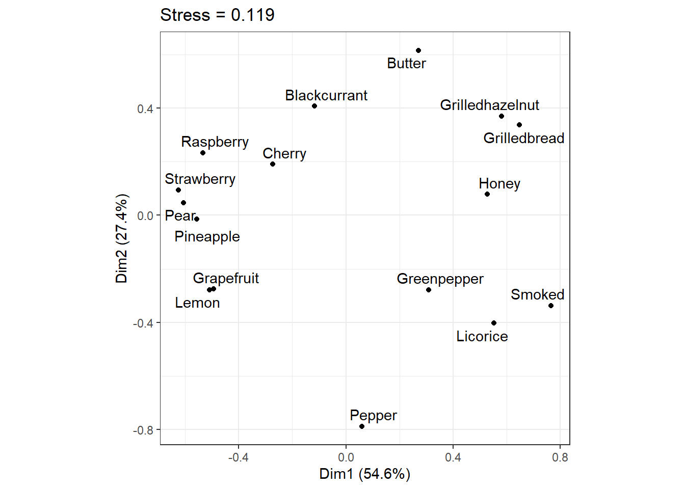
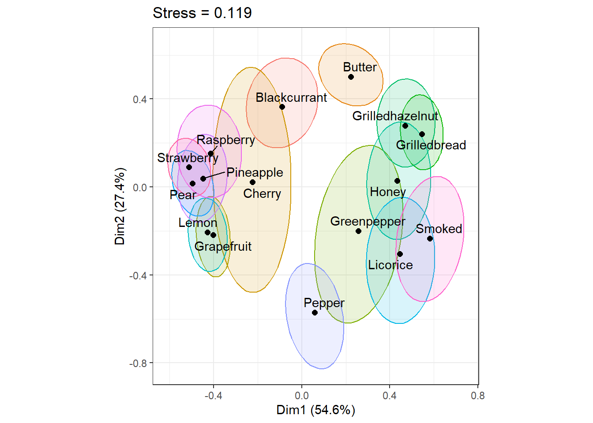
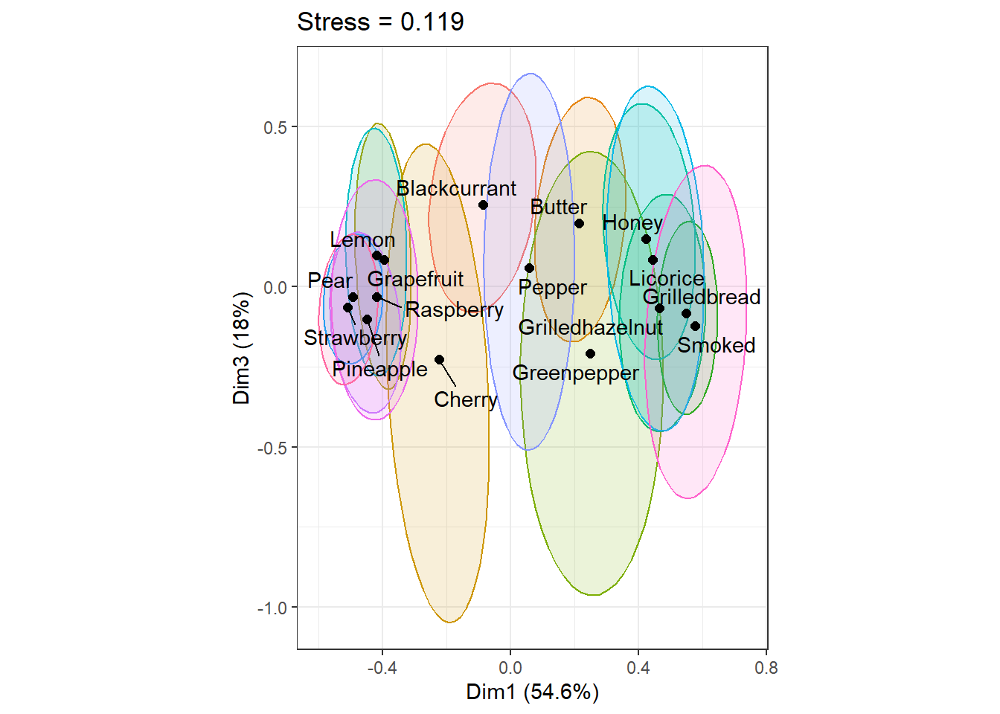

Voir le code R
remotes::install_github("GALHARRET/TeachFreeSortR",upgrade = "always",force = TRUE,dependencies =NA)Pour les étudiants utilisant leur ordinateur personnel il faut installer le package TeachFreeSortR :
remotes::install_github("GALHARRET/TeachFreeSortR",upgrade = "always",force = TRUE,dependencies =NA)Ensuite charger le package :
library(TeachFreeSortR)On va étudier un premier exemple de tri libre de 16 arômes proposés à 31 sujets.
Cette base de données est disponible ici.
df<-read.csv("aroma.csv",header = T,sep=";",row.names=1)| Données brutes | |||||||||||||||||||||||||||||
| 29 individus, 16 produits | |||||||||||||||||||||||||||||
| S1 | S2 | S3 | S4 | S5 | S6 | S7 | S8 | S9 | S10 | S11 | S12 | S13 | S14 | S15 | S16 | S17 | S18 | S19 | S20 | S21 | S22 | S23 | S24 | S25 | S26 | S27 | S28 | S29 | |
|---|---|---|---|---|---|---|---|---|---|---|---|---|---|---|---|---|---|---|---|---|---|---|---|---|---|---|---|---|---|
| Lemon | 5.00 | 1.00 | 4.00 | 1.00 | 1.00 | 1.00 | 1.00 | 2.00 | 3.00 | 1.00 | 1.00 | 1.00 | 1.00 | 4.00 | 2.00 | 1.00 | 2.00 | 2.00 | 2.00 | 3.00 | 3.00 | 4.00 | 3.00 | 1.00 | 2.00 | 6.00 | 1.00 | 2.00 | 8.00 |
| Grapefruit | 5.00 | 3.00 | 5.00 | 1.00 | 2.00 | 1.00 | 2.00 | 2.00 | 3.00 | 1.00 | 1.00 | 1.00 | 1.00 | 4.00 | 2.00 | 1.00 | 1.00 | 2.00 | 1.00 | 2.00 | 3.00 | 6.00 | 3.00 | 1.00 | 2.00 | 6.00 | 1.00 | 2.00 | 2.00 |
| Pineapple | 4.00 | 1.00 | 5.00 | 1.00 | 5.00 | 1.00 | 2.00 | 1.00 | 1.00 | 1.00 | 5.00 | 1.00 | 1.00 | 1.00 | 1.00 | 1.00 | 1.00 | 3.00 | 1.00 | 2.00 | 2.00 | 4.00 | 1.00 | 3.00 | 7.00 | 6.00 | 3.00 | 3.00 | 4.00 |
| Pear | 5.00 | 1.00 | 5.00 | 1.00 | 1.00 | 3.00 | 2.00 | 2.00 | 1.00 | 2.00 | 1.00 | 1.00 | 1.00 | 1.00 | 1.00 | 1.00 | 2.00 | 2.00 | 1.00 | 3.00 | 5.00 | 4.00 | 2.00 | 3.00 | 6.00 | 1.00 | 1.00 | 3.00 | 4.00 |
| Honey | 4.00 | 2.00 | 3.00 | 2.00 | 3.00 | 6.00 | 3.00 | 5.00 | 2.00 | 3.00 | 7.00 | 2.00 | 1.00 | 4.00 | 5.00 | 5.00 | 3.00 | 1.00 | 5.00 | 4.00 | 4.00 | 3.00 | 1.00 | 2.00 | 2.00 | 7.00 | 5.00 | 4.00 | 12.00 |
| Butter | 1.00 | 4.00 | 5.00 | 2.00 | 3.00 | 5.00 | 3.00 | 5.00 | 4.00 | 4.00 | 4.00 | 5.00 | 2.00 | 4.00 | 9.00 | 5.00 | 6.00 | 4.00 | 3.00 | 5.00 | 4.00 | 2.00 | 1.00 | 6.00 | 4.00 | 5.00 | 3.00 | 5.00 | 9.00 |
| Grilledbread | 1.00 | 2.00 | 3.00 | 5.00 | 5.00 | 5.00 | 3.00 | 3.00 | 2.00 | 3.00 | 9.00 | 2.00 | 3.00 | 2.00 | 3.00 | 2.00 | 3.00 | 1.00 | 4.00 | 1.00 | 4.00 | 2.00 | 4.00 | 6.00 | 4.00 | 4.00 | 2.00 | 1.00 | 1.00 |
| Grilledhazelnut | 5.00 | 2.00 | 3.00 | 2.00 | 5.00 | 5.00 | 3.00 | 3.00 | 4.00 | 3.00 | 6.00 | 2.00 | 3.00 | 2.00 | 3.00 | 2.00 | 3.00 | 5.00 | 5.00 | 1.00 | 4.00 | 2.00 | 3.00 | 4.00 | 4.00 | 5.00 | 2.00 | 7.00 | 6.00 |
| Strawberry | 5.00 | 1.00 | 5.00 | 1.00 | 1.00 | 2.00 | 2.00 | 1.00 | 1.00 | 2.00 | 1.00 | 1.00 | 1.00 | 1.00 | 6.00 | 1.00 | 2.00 | 3.00 | 1.00 | 3.00 | 6.00 | 6.00 | 1.00 | 3.00 | 1.00 | 1.00 | 3.00 | 3.00 | 3.00 |
| Raspberry | 3.00 | 3.00 | 4.00 | 4.00 | 1.00 | 2.00 | 2.00 | 1.00 | 4.00 | 4.00 | 1.00 | 1.00 | 1.00 | 1.00 | 1.00 | 1.00 | 2.00 | 2.00 | 2.00 | 3.00 | 5.00 | 2.00 | 2.00 | 3.00 | 1.00 | 1.00 | 3.00 | 3.00 | 4.00 |
| Cherry | 3.00 | 3.00 | 5.00 | 3.00 | 5.00 | 6.00 | 1.00 | 1.00 | 1.00 | 2.00 | 2.00 | 1.00 | 3.00 | 3.00 | 7.00 | 8.00 | 2.00 | 4.00 | 6.00 | 7.00 | 7.00 | 4.00 | 3.00 | 2.00 | 8.00 | 2.00 | 3.00 | 3.00 | 7.00 |
| Blackcurrant | 3.00 | 4.00 | 4.00 | 3.00 | 4.00 | 5.00 | 2.00 | 5.00 | 4.00 | 3.00 | 7.00 | 1.00 | 2.00 | 4.00 | 1.00 | 1.00 | 4.00 | 3.00 | 6.00 | 5.00 | 4.00 | 1.00 | 2.00 | 1.00 | 4.00 | 7.00 | 1.00 | 3.00 | 9.00 |
| Greenpepper | 4.00 | 3.00 | 1.00 | 4.00 | 4.00 | 3.00 | 3.00 | 4.00 | 2.00 | 5.00 | 8.00 | 2.00 | 1.00 | 3.00 | 4.00 | 7.00 | 3.00 | 1.00 | 3.00 | 2.00 | 2.00 | 2.00 | 5.00 | 4.00 | 7.00 | 4.00 | 1.00 | 6.00 | 11.00 |
| Smoked | 2.00 | 2.00 | 2.00 | 4.00 | 3.00 | 4.00 | 3.00 | 4.00 | 7.00 | 3.00 | 3.00 | 3.00 | 5.00 | 2.00 | 4.00 | 3.00 | 5.00 | 1.00 | 5.00 | 9.00 | 1.00 | 5.00 | 6.00 | 2.00 | 3.00 | 3.00 | 2.00 | 1.00 | 10.00 |
| Pepper | 2.00 | 2.00 | 2.00 | 1.00 | 2.00 | 3.00 | 1.00 | 2.00 | 6.00 | 5.00 | 5.00 | 4.00 | 4.00 | 3.00 | 8.00 | 6.00 | 4.00 | 4.00 | 6.00 | 8.00 | 3.00 | 3.00 | 3.00 | 5.00 | 2.00 | 8.00 | 4.00 | 4.00 | 11.00 |
| Licorice | 2.00 | 4.00 | 3.00 | 4.00 | 2.00 | 4.00 | 3.00 | 3.00 | 5.00 | 4.00 | 7.00 | 3.00 | 5.00 | 3.00 | 5.00 | 4.00 | 3.00 | 1.00 | 4.00 | 6.00 | 3.00 | 5.00 | 2.00 | 2.00 | 5.00 | 9.00 | 4.00 | 4.00 | 5.00 |
On note \(D^{(n)}=(d^{(n)}_{i,j})_{i,j}\) la matrice de dissimilarités obtenue à partir de la partition du \(n\)-ième individu. On a
\(d^{(n)}_{i,j}=0\) si \(i,j\) sont dans la même partition,
\(d^{(n)}_{i,j}=1\) sinon.
Remarque La matrice \(D^{(n)}\) est une matrice symétrique dont la diagonale est nulle.
dissP<-dissim_partition(df)
tab<-dissP$S1Ceci donne la matrice de dissimilarité pour l’individu
| Matrice de dissimilarité | ||||||||||||||||
| Individu 1 | ||||||||||||||||
| Lemon | Grapefruit | Pineapple | Pear | Honey | Butter | Grilledbread | Grilledhazelnut | Strawberry | Raspberry | Cherry | Blackcurrant | Greenpepper | Smoked | Pepper | Licorice | |
|---|---|---|---|---|---|---|---|---|---|---|---|---|---|---|---|---|
| Lemon | 0 | 0 | 1 | 0 | 1 | 1 | 1 | 0 | 0 | 1 | 1 | 1 | 1 | 1 | 1 | 1 |
| Grapefruit | 0 | 0 | 1 | 0 | 1 | 1 | 1 | 0 | 0 | 1 | 1 | 1 | 1 | 1 | 1 | 1 |
| Pineapple | 1 | 1 | 0 | 1 | 0 | 1 | 1 | 1 | 1 | 1 | 1 | 1 | 0 | 1 | 1 | 1 |
| Pear | 0 | 0 | 1 | 0 | 1 | 1 | 1 | 0 | 0 | 1 | 1 | 1 | 1 | 1 | 1 | 1 |
| Honey | 1 | 1 | 0 | 1 | 0 | 1 | 1 | 1 | 1 | 1 | 1 | 1 | 0 | 1 | 1 | 1 |
| Butter | 1 | 1 | 1 | 1 | 1 | 0 | 0 | 1 | 1 | 1 | 1 | 1 | 1 | 1 | 1 | 1 |
| Grilledbread | 1 | 1 | 1 | 1 | 1 | 0 | 0 | 1 | 1 | 1 | 1 | 1 | 1 | 1 | 1 | 1 |
| Grilledhazelnut | 0 | 0 | 1 | 0 | 1 | 1 | 1 | 0 | 0 | 1 | 1 | 1 | 1 | 1 | 1 | 1 |
| Strawberry | 0 | 0 | 1 | 0 | 1 | 1 | 1 | 0 | 0 | 1 | 1 | 1 | 1 | 1 | 1 | 1 |
| Raspberry | 1 | 1 | 1 | 1 | 1 | 1 | 1 | 1 | 1 | 0 | 0 | 0 | 1 | 1 | 1 | 1 |
| Cherry | 1 | 1 | 1 | 1 | 1 | 1 | 1 | 1 | 1 | 0 | 0 | 0 | 1 | 1 | 1 | 1 |
| Blackcurrant | 1 | 1 | 1 | 1 | 1 | 1 | 1 | 1 | 1 | 0 | 0 | 0 | 1 | 1 | 1 | 1 |
| Greenpepper | 1 | 1 | 0 | 1 | 0 | 1 | 1 | 1 | 1 | 1 | 1 | 1 | 0 | 1 | 1 | 1 |
| Smoked | 1 | 1 | 1 | 1 | 1 | 1 | 1 | 1 | 1 | 1 | 1 | 1 | 1 | 0 | 0 | 0 |
| Pepper | 1 | 1 | 1 | 1 | 1 | 1 | 1 | 1 | 1 | 1 | 1 | 1 | 1 | 0 | 0 | 0 |
| Licorice | 1 | 1 | 1 | 1 | 1 | 1 | 1 | 1 | 1 | 1 | 1 | 1 | 1 | 0 | 0 | 0 |
On ajoute toutes les matrices de dissimilarités individuelles. On obtient la matrice \(D\) de coefficients : \[\delta_{i,j}=\sum_{n=1}^N d^{(n)}_{i,j}\]
Cette matrice est symétrique et sa diagonale est nulle.
Tous les coefficients de cette matrice sont des entiers inférieurs ou égaux à \(N\).
DissTotal<-total_dissim(df)On obtient la matrice de dissimilarité totale :
| Matrice de dissimilarité | ||||||||||||||||
| Individu 1 | ||||||||||||||||
| Lemon | Grapefruit | Pineapple | Pear | Honey | Butter | Grilledbread | Grilledhazelnut | Strawberry | Raspberry | Cherry | Blackcurrant | Greenpepper | Smoked | Pepper | Licorice | |
|---|---|---|---|---|---|---|---|---|---|---|---|---|---|---|---|---|
| Lemon | 0 | 9 | 20 | 15 | 26 | 28 | 29 | 27 | 19 | 19 | 24 | 23 | 27 | 29 | 23 | 28 |
| Grapefruit | 9 | 0 | 17 | 17 | 26 | 27 | 29 | 27 | 19 | 22 | 25 | 23 | 25 | 29 | 23 | 27 |
| Pineapple | 20 | 17 | 0 | 14 | 26 | 26 | 28 | 28 | 13 | 18 | 21 | 23 | 24 | 29 | 27 | 29 |
| Pear | 15 | 17 | 14 | 0 | 28 | 28 | 29 | 28 | 10 | 12 | 22 | 22 | 26 | 29 | 26 | 28 |
| Honey | 26 | 26 | 26 | 28 | 0 | 21 | 20 | 20 | 27 | 28 | 27 | 23 | 22 | 22 | 25 | 21 |
| Butter | 28 | 27 | 26 | 28 | 21 | 0 | 22 | 21 | 26 | 25 | 26 | 19 | 26 | 27 | 28 | 26 |
| Grilledbread | 29 | 29 | 28 | 29 | 20 | 22 | 0 | 11 | 29 | 28 | 27 | 25 | 22 | 22 | 28 | 23 |
| Grilledhazelnut | 27 | 27 | 28 | 28 | 20 | 21 | 11 | 0 | 28 | 27 | 26 | 24 | 24 | 23 | 27 | 25 |
| Strawberry | 19 | 19 | 13 | 10 | 27 | 26 | 29 | 28 | 0 | 13 | 21 | 24 | 28 | 29 | 28 | 29 |
| Raspberry | 19 | 22 | 18 | 12 | 28 | 25 | 28 | 27 | 13 | 0 | 22 | 20 | 25 | 28 | 29 | 26 |
| Cherry | 24 | 25 | 21 | 22 | 27 | 26 | 27 | 26 | 21 | 22 | 0 | 24 | 27 | 28 | 24 | 27 |
| Blackcurrant | 23 | 23 | 23 | 22 | 23 | 19 | 25 | 24 | 24 | 20 | 24 | 0 | 27 | 28 | 27 | 26 |
| Greenpepper | 27 | 25 | 24 | 26 | 22 | 26 | 22 | 24 | 28 | 25 | 27 | 27 | 0 | 24 | 25 | 24 |
| Smoked | 29 | 29 | 29 | 29 | 22 | 27 | 22 | 23 | 29 | 28 | 28 | 28 | 24 | 0 | 26 | 20 |
| Pepper | 23 | 23 | 27 | 26 | 25 | 28 | 28 | 27 | 28 | 29 | 24 | 27 | 25 | 26 | 0 | 23 |
| Licorice | 28 | 27 | 29 | 28 | 21 | 26 | 23 | 25 | 29 | 26 | 27 | 26 | 24 | 20 | 23 | 0 |
On considère \(N\) points \(x_1,...,x_N\) dans un espace de dimension \(P\) caractérisés par la matrice de dissimilarité \(D=(\delta_{ij})_{1\leq i\leq j\leq N}\).
BUT représenter ces points dans un espace de dimension \(k<P\) par \(N\) points \(y_1,...,y_N\) en conservant les proximités entre les points initiaux.
Cela suppose :
l’existence de variables latentes (ie qui permettent de résumer des dissimilarités entre produits)
le choix d’un indice de qualité de la projection des dissimilarités dans l’espace latent (\(\leadsto\) S : Fonction de coût appelée Stress). Le but sera de trouver \(y_1,...,y_N\) tels que \(S(y_1,...,y_N)\) est minimale.
Dans ce cas le stress est défini par \[S(y_1,...,y_N)=\sum_{i< j} \left( \delta_{ij}-\Vert y_i-y_j\Vert\right)^2\] Dans ce cas on veut représenter les points initiaux en conservant la valeur absolue et relative de leurs dissimilarités.
Dans ce cas le stress est défini par \[S(y_1,...,y_N)=\sum_{i< j} \left( \delta_{ij}-f(\Vert y_i-y_j\Vert)\right)^2\] où \(f\) est une fonction monotone de \((i,j)\). La fonction \(f\) s’adapte durant la phase d’optimisation.
On veut préserver uniquement l’ordre entre les proximités des points initiaux.
La fonction de coût utilisé en pratique est une version normalisée du stress :
\[S_{norm}(y_1,...,y_N)=\displaystyle \frac{\sum_{i<j}(\delta_{i,j}-f(\Vert y_i-y_j\Vert))^2}{\sum_{i<j}\delta_{i,j}^2}\]
où \(f\) est l’identité pour la MDS métrique.
Comme souvent en analyse de données, on peut utiliser la règle du coude pour déterminer le nombre de dimensions :
stress<-rep(NA,6)
# getStress donne le stress de Kruskal (ie normalisé)
for(i in 1:6){
stress[i]<-compute_mds(DissTotal,k = i)$stress
}
library(ggplot2)
dim_choice<-data.frame(k=1:6,stress=stress)
ggplot(dim_choice,aes(x=k,y=stress))+
geom_point()+
geom_line()+
theme_bw()+
labs(title="Choix du nombre de dimension",
x="Nb de Dimensions")
k=3
mds_plot(df,k=3,n_boot = 0)
On se pose la question de la stabilité de la configuration. D’autres individus proposeraient d’autres partitions \(\leadsto\) autre configuration.
Pseudo-individus à partir des individus de l’échantillon (Bootstrap) : on tire des individus avec remise dans l’échantillon et on construit la configuration obtenue (en général \(B=500\) tirages).
Construction d’ellipses de confiance à partir de ces \(B=500\) configurations (par défaut dans la fonction mds_plot).
mds_plot(df,k=3)
mds_plot(df,k=3,dim=c(1,3))
On propose aux 31 sujets une liste de 36 descripteurs pour les 16 produits considérés. On obtient la table de contingence suivante :
On effectue la régression de chacun des descripteurs sur les composantes de la MDS.
Les coefficients de regression seront utilisés comme coordonnées dans les plans factoriels.
Exemple
Descripteur Acide :
beta<-data.frame(matrix(NA,nrow=dim(ia)[2],ncol=dim(config)[2]))
for(i in 1:dim(beta)[1]){
beta[i,]<-coef(lm(AromaTerms[,i]~as.matrix(config)))[-1]
}
rownames(beta)<-colnames(ia)
colnames(beta)[1:ndim]<-paste("Dim",1:ndim,sep="")On obtient :
ggplot(beta, aes(x=1.05*Dim1, y=1.05*Dim2,label=rownames(beta))) +
geom_text() +
geom_segment(data=beta,aes(x=0, y=0, xend=Dim1, yend=Dim2), arrow = arrow(length=unit(.1, 'cm')))+
theme_minimal()+
#theme(element_text(size=10))+
xlab(paste("Dim1=",round(resMds@Percent[1]*100,3),"%"))+
ylab(paste("Dim2=",round(resMds@Percent[2]*100,3),"%"))+
ggtitle(paste("MDS, stress=",round(resMds@Stress,3)))